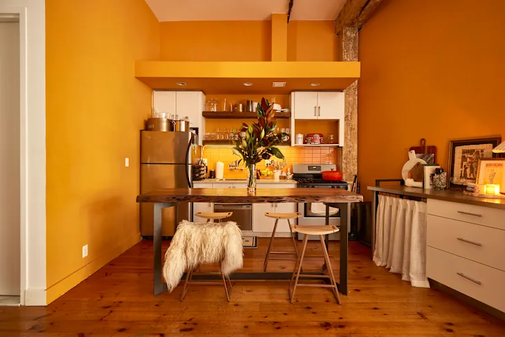

Color Use in Website Design
Warm vs Cool?
Warm colors are red, orange, and yellow which gives exciting and happy feeling, cool colors are blue, green, and purple which feel calm and peaceful.
How Does a Color's Effect Change Depending on Nearby Colors?
Colors can look brighter, darker, warmer, or cooler depending on the colors around them.
Cultural Differences Related to Color and Meaning
Different cultures give colors different meanings. For example, white means peace in some places but sadness in others.
Sources
- Warm vs. Cool Tones in Web Design - https://designweblouisville.com/warm-vs-cool-tones-in-web-design-which-should-you-choose-for-your-sites-color-palette/
- Colors Palette Generator - http://www.degraeve.com/color-palette/index.php
- HTML color codes and names - https://www.computerhope.com/htmcolor.htm
- The Psychology of Color and Graphic Design - https://platt.edu/blog/psychology-color-graphic-design/
Image 1 - Warm House

This image has a warm and cozy mood using orange and yellow colors.
#552211
#aa5511
#aa5511
#dd9933
Image 2 - Cool House

This image has relaxing mood using blue and gray colors.
#112233
#556666
#334455
#bbbbbb
Image 3 - Rainbow colors

TThis image is creating a fun and vibrant mood using bright rainbow colors.
#ee3344
#ddbb11
#22bbee
#ccccdd